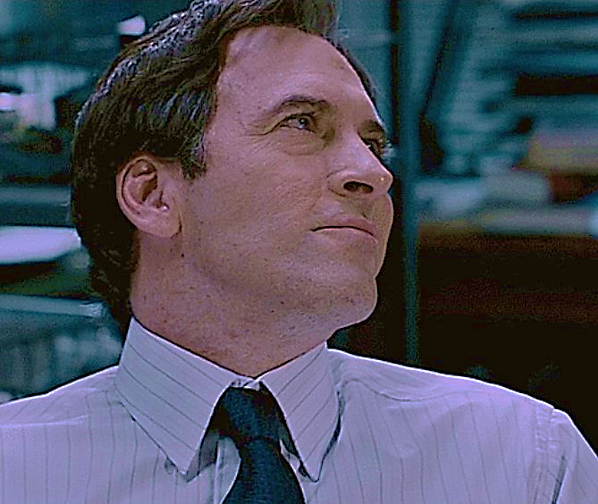
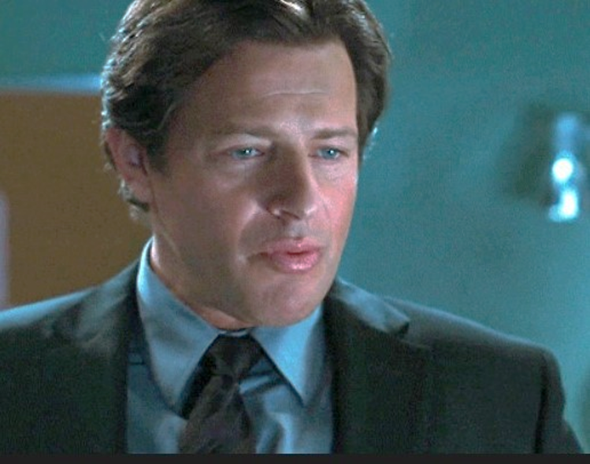
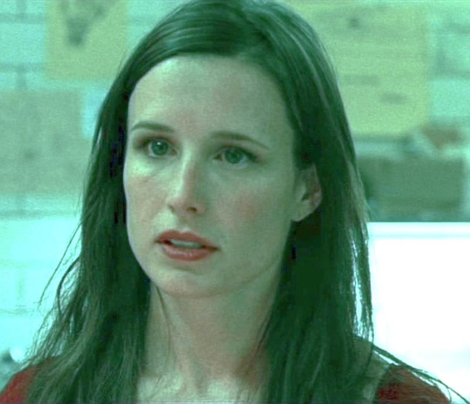
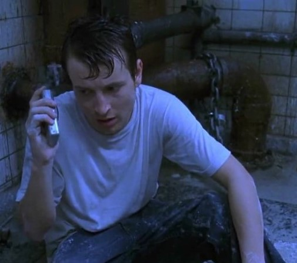

| IMG |
Name - Alias |
Appearances |
Memorable Scenes |
Why you should like this character |
|  |
Agent
Peter Strahm |
Saw IV (2007)
Saw V (2008) |
- The first to propose the possibility of a 2nd Jigsaw accomplice.
- Water Cube Trap: An inescapable trap where he was meant to die by drowning- survived by performing a tracheotomy on himself.
- Glass Coffin Trap: His search for the 2nd Jigsaw accomplice led him to a room with a box filled with glass in the middle of the room, with Detective Hoffman's voice on the recorder within it. "Get in the box and survive"; but his distrust led to his death- death by the walls that are closing in.
|
- "My daughter loves him, I think he looks a little gay. But whatever makes my princess happy❤️❤️❤️❤️" It's me. I'm daughter.
- He's neurotic and has terrible anger issues but still manages to embody 'hot girl' energy. Just like me for real!
- In all seriousness, he's an amazing protagonist-deuteragonist, violence and anger and brutality perfectly incorporated into this character who was meant to be the good and righteous, heroic man. Can you tell I love him a lot. Because I do <3
|
|  |
Detective Mark Hoffman |
Saw III (2006)
Saw IV (2007)
Saw V (2008)
Saw VI (2009)
Saw 3D (2010) |
- Ice Block Trap: He was 'trapped' along with Detective Matthews and Art Blank, with Detective Rigg supposed to save them. This was when he was revealed to be the 2nd Jigsaw accomplice.
- Reverse Bear Trap (pt. 2): John Kramer's ex-wife Jill Tuck acted out his will, in which John requested to test his own apprentice, Mark Hoffman, in an inescapable version of the Reverse Bear Trap- but he manages to escape anyway.
|
- Part 2 of "My daughter loves him, I think he looks a little gay. But whatever makes my princess happy❤️❤️❤️❤️" It's me. I'm daughter.
- He's kind of stupid but that's part of his homosexual charm.
- He's a white man with lips. You'll never find another.
|
|  |
Amanda Young |
Saw (2004)
Saw II (2005)
Saw III (2006)
Saw IV (2007)
Saw V (2008)
Saw VI (2009)
Saw 3D (2010) |
- Reverse Bear Trap: Her most iconic appearance- cut into the stomach of a 'dead' man for the key to the machine attached to her jaws, when, if not unlocked within 1 minute, will spring open.
- Nerve Gas House: She pretends to be a player in the game, only revealing at the end that she was taken in by John as some sort of "apprentice"
|
- She's so pretty... Tears in my eyes... I love unhinged women...
- I'm an Amanda kinnie so I may be biased but she's the best apprentice <3
- She made the Angel Trap. Now isn't that hot.
- I think what makes her so interesting as a character is that she 'subscribes' to the Jigsaw ideology where people "learn to appreciate life" after surviving traps, but she herself doesn't truly believe it. The reason why her traps are inescapable is just her self-hatred on a larger scale. She wasn't able to change, so she doesn't believe others can. So she takes the choice away.
- Did I mention I love her.
|
|
Agent Lindsey Perez |
Saw IV (2007)
Saw V (2008)
Saw VI (2009) |
- SAW VI: She was able to back Mark Hoffman into a corner, ultimately leading to his demise in SAW VII
|
- She may not have appeared for long, especially after getting blasted by shrapnel to the face, but she's still iconic in my heart.
- She and Strahm are wlw/mlm solidarity. What more reason does one need to like her.
|
|  |
Adam Faulker-Stanheight |
Saw (2004) |
- Bathroom Trap: The most iconic scene from Saw, with him and Doctor Gordon chained to either side of a dingy bathroom. We've heard this scenario a million times.
|
- "This is the most fun I've had without lubricant!" *is chained up in a dirty bathroom with a dead body in the middle*- Tell me he isn't an interesting creature just from that. (Sir, I hope you don't read these because this'll kind of be awkward but I want to keep it in because it's funny to me.)
- Let me use this space to vent about how he was done so dirty in Saw. "But what do voyeurs see when they look into the mirror?...So are you going to watch yourself die today, Adam, or do something about it?". HE DID DO SOMETHING ABOUT IT!! He helped Doctor Gordon escape, he did everything he could to help a man whose only task was to kill him. He let himself get shot, he killed a man with a toilet cover. He did what the tape told him to do, he didn't stand by as the world passed him by!! I'm sorry but he did not deserve what happened to him at all. But I get it because Saw was meant to be a one-off film so they probably did not consider the "Jigsaw Ideology" until later on.
- Despite him being stuck in the bathroom, maybe being dead (saying maybe is my copium I need him to be alive), he haunts the narrative which is so amazing. Doctor Gordon's actions were for him, Amanda's first mistake was him, and Hoffman's karma is where he died.... I can no longer verbalize properly but you get what I mean!
|